Administración y gerencia
Camiones, contratos, jornadas, alertas y supervisión.
NANU TECH
Trabajo final DISI
NANU TECH | Presentación final DISI
Solución orientada a pequeñas y medianas empresas de transporte de carga, integrando gestión web, operación móvil del chofer, trazabilidad de datos, auditoría, alertas y soporte offline básico.
Camiones, contratos, jornadas, alertas y supervisión.
Jornada, observaciones, SOS/auxilio y offline básico.
Estados, evidencias, registros operativos y acciones críticas.
Autenticación, permisos, persistencia y despliegue preparado.
El trabajo demuestra el ciclo completo de diseño e implementación de un MVP operativo: análisis, diseño, construcción, validación y preparación para operación.
Diseñar e implementar NANU TECH como una plataforma híbrida web-móvil para organizar la gestión operativa de flota, conectando administración, gerencia, choferes, datos y servicios técnicos de soporte.
Analizar la gestión dispersa de flota, jornadas, contratos, camiones, alertas y conductores.
Definir y priorizar RF/RNF del MVP con criterios de ingeniería y valor operativo.
Diseñar arquitectura funcional, lógica, datos y despliegue para web, app, servicios técnicos y offline básico.
Implementar módulos principales diferenciando funcionalidades web, móviles, servicios técnicos y datos.
Validar con pruebas funcionales, integración web-móvil-servicios-datos, seguridad y offline/sync.
Proponer despliegue, costos, capacitación, mantenimiento y evolución del sistema.
Delimita qué incluye esta primera versión funcional y qué queda fuera del alcance del trabajo DISI.
Oficina y campo operan con información separada; por ello se requiere una plataforma web-móvil que conecte registros, eventos y trazabilidad.
Se requiere una solución web-móvil que conecte oficina, operación en campo y datos consolidados para mejorar trazabilidad y seguimiento operativo.
NANU TECH se orienta a pequeñas y medianas empresas de transporte de carga con flotas propias o asignadas, que requieren trazabilidad operativa sin depender de telemetría empresarial avanzada.
Opera flotas propias o asignadas y necesita trazabilidad sin alto costo de telemetría.
Gestiona camiones, jornadas, conductores, alertas y auditoría desde un canal web integrado.
Consulta contratos, indicadores, seguimiento e historial para tomar decisiones resumidas.
Usa la app móvil para jornada, observaciones, SOS/auxilio y eventos offline controlados.
El panel web del chofer funciona como respaldo de consulta o contingencia; no reemplaza la app móvil como canal principal de campo.
NANU TECH se justifica porque conecta eventos de campo con registros administrativos y evidencia el ciclo completo de diseño e implementación de un sistema de información.
La referencia normativa refuerza la importancia de registrar jornadas y operaciones; no convierte al MVP en certificación legal completa.
Centraliza camiones, contratos, jornadas, alertas y conductores, reduciendo dispersión de información.
Aplica SDLC completo: análisis, diseño, implementación, pruebas, despliegue y mantenimiento.
Integra web, app móvil, servicios técnicos, PostgreSQL, seguridad y sincronización básica por canal y rol.
Asocia acciones críticas a usuario, rol, módulo, fecha, estado y evidencia operativa.
El Canvas sintetiza la idea TIC y permite conectar problema, usuarios, propuesta de valor y modelo operativo.
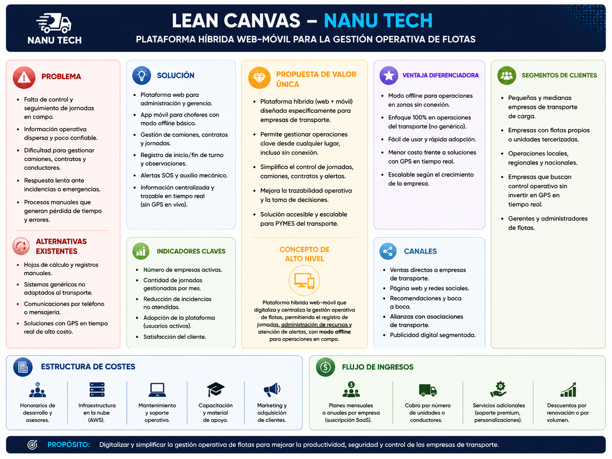
NANU TECH no compite como plataforma empresarial de telemetría; se diferencia por priorizar un MVP operativo web-móvil para pymes, sin depender de hardware GPS ni integraciones complejas.
NANU TECH se ubica como una solución académica y operativa enfocada en trazabilidad, no como telemetría empresarial avanzada.
NANU TECH conecta gestión web, operación móvil del chofer, datos, auditoría y sincronización básica en un flujo operativo trazable.
Centraliza camiones, contratos, conductores y jornadas para reducir dispersión operativa.
El chofer registra inicio, fin, observaciones, SOS y auxilio desde campo, incluso con conectividad limitada.
Administración y gerencia consultan jornadas, contratos, alertas y auditoría para supervisión operativa.
Cada acción queda asociada a usuario, rol, módulo, fecha, estado y evidencia.
MVP operativo web-móvil para pymes, con auditoría y offline básico, sin depender de GPS real-time ni hardware especializado.
El MVP se concentra en el flujo operativo principal y excluye capacidades avanzadas que requieren otra escala técnica o empresarial.
Todo lo incluido debe poder explicarse, evidenciarse o validarse como parte del flujo operativo mínimo.
Los valores referenciales permiten estimar carga, costos, capacitación y mantenimiento sin afirmar una implantación comercial real.
Base para registros, contratos, jornadas y pruebas de flota.
Escenario para validar usuarios móviles, capacitación y operación diaria.
Referencia para volumen de datos, auditoría y sincronización.
Periodo inicial de estabilización, corrección y mantenimiento.
Estos supuestos justifican estimación de costos, validación funcional, dimensionamiento de datos, capacitación por rol y mantenimiento inicial del MVP.
NANU TECH separa responsabilidades por rol y canal. La web gestiona y supervisa; la app móvil opera en campo; los datos trazan la jornada; los servicios técnicos sostienen reglas, permisos y auditoría.
Gestiona camiones, jornadas, alertas, auditoría y conductores.
Consulta dashboard, contratos, asignaciones e historial operativo.
Canal principal para jornada, inicio/fin, observaciones, SOS/auxilio y offline básico.
Canal secundario para consulta, respaldo o contingencia.
Soporte común de roles, reglas, persistencia y trazabilidad; no es actor de negocio.
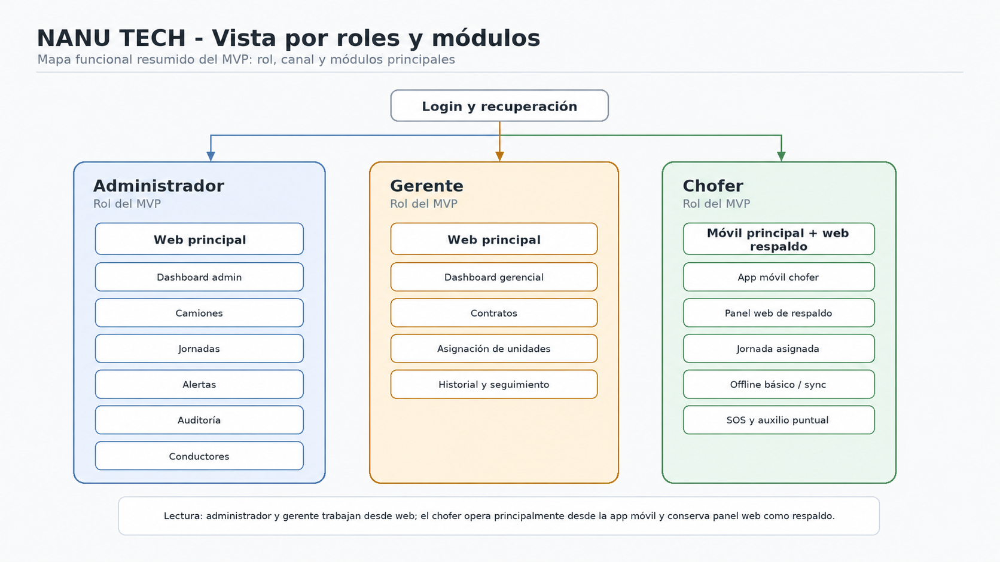
El SDLC ordena el informe y conecta análisis, diseño, implementación, pruebas, despliegue y mantenimiento sin perder control del MVP.
Problema, segmento, actores, alcance, riesgos, costos y requerimientos.
UX, arquitectura, DER, seguridad, roles y sincronización.
Web, Flutter móvil, servicios REST, PostgreSQL y auditoría.
Funcionales, integración, roles, app móvil y offline/sync.
Despliegue local/testing/cloud inicial, costos, capacitación y mantenimiento.
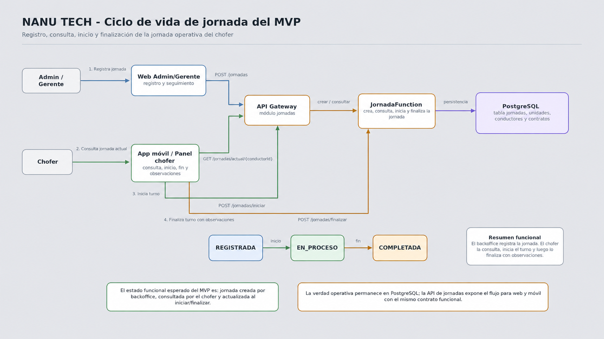
El informe usa un enfoque aplicado, tecnológico y descriptivo, sustentado en artefactos del producto, documentación técnica y evidencias de validación.
Las fuentes sostienen el análisis: cada decisión se vincula con artefactos, evidencia y validación.
Los requerimientos conectan el diagnóstico con funcionalidades verificables, reglas de negocio y atributos de calidad.
Una funcionalidad se considera completa cuando tiene pantalla, endpoint o persistencia, regla asociada y evidencia de prueba.
Las reglas convierten los requerimientos en criterios verificables para jornadas, roles, alertas, auditoría y sincronización.
RN-AUT-01 Todo usuario opera con rol autorizado.
RN-AUT-02 Admin, gerente y chofer acceden a módulos/endpoints diferenciados.
RN-MOV-01 App móvil reservada para rol chofer.
RN-JOR-01 Jornada no finaliza sin inicio válido.
RN-JOR-02 Chofer no mantiene dos jornadas activas simultáneamente.
RN-JOR-03 Jornada asociada a conductor, unidad y contrato cuando aplique.
RN-ALT-01 Alerta conserva tipo, usuario, jornada, fecha y estado.
RN-ALT-02 SOS y auxilio generan trazabilidad para revisión administrativa.
RN-ALT-03 Alerta resuelta conserva historial de atención.
RN-AUD-01 Acciones críticas quedan registradas.
RN-OFF-01 Eventos offline guardados con identificador local y estado.
RN-OFF-02 Sync evita duplicar eventos ya procesados.
Cada regla debe reflejarse en una prueba funcional, de integración o de seguridad.
MoSCoW protege el alcance y evita incluir módulos atractivos pero no cerrables dentro del MVP.
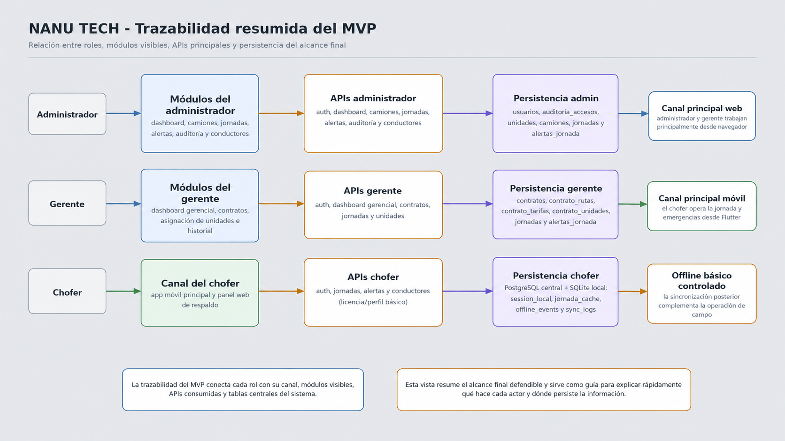
Una funcionalidad solo entra al MVP si puede relacionarse con requerimiento, diseño, implementación y evidencia de prueba.
Los prototipos consolidan los flujos de administración, gerencia y chofer antes de la implementación funcional.
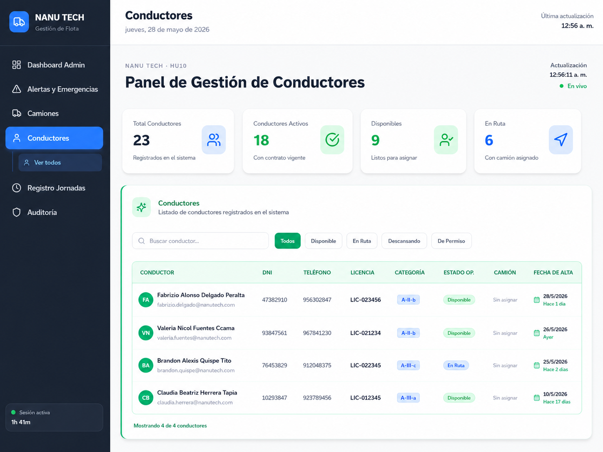
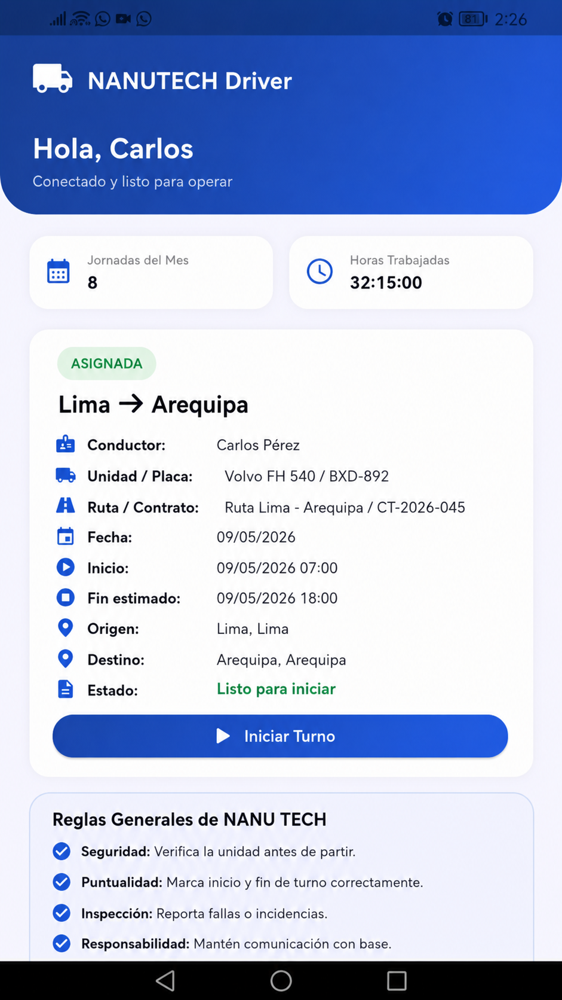
El diseño UX traduce roles y flujos del MVP en pantallas comprensibles antes de pasar a implementación.
La arquitectura separa canales de usuario, datos y servicios técnicos para mantener consistencia entre gestión web, operación móvil y trazabilidad.
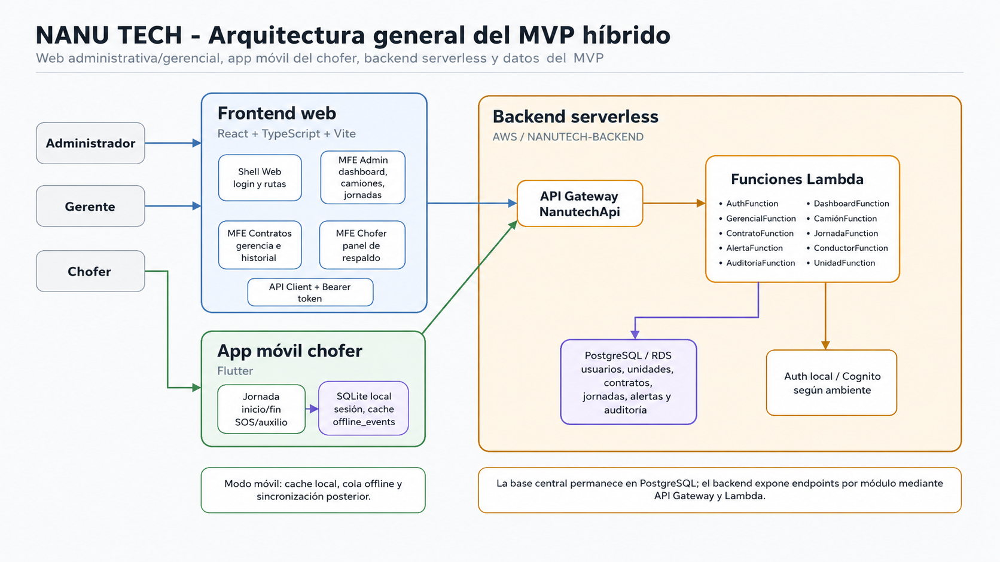
Administración, gerencia y panel chofer de respaldo.
Canal principal del chofer en campo.
Reglas, roles, endpoints, validaciones y auditoría.
PostgreSQL/RDS central y SQLite local móvil.
AWS SAM, API Gateway, Lambdas y testing/cloud inicial.
La trazabilidad se construye entre canales, datos y auditoría; los servicios técnicos permiten que web y app móvil compartan reglas sin convertirse en el centro funcional del producto.
El soporte offline reduce pérdida de eventos críticos en campo, sin presentarse como offline robusto productivo.
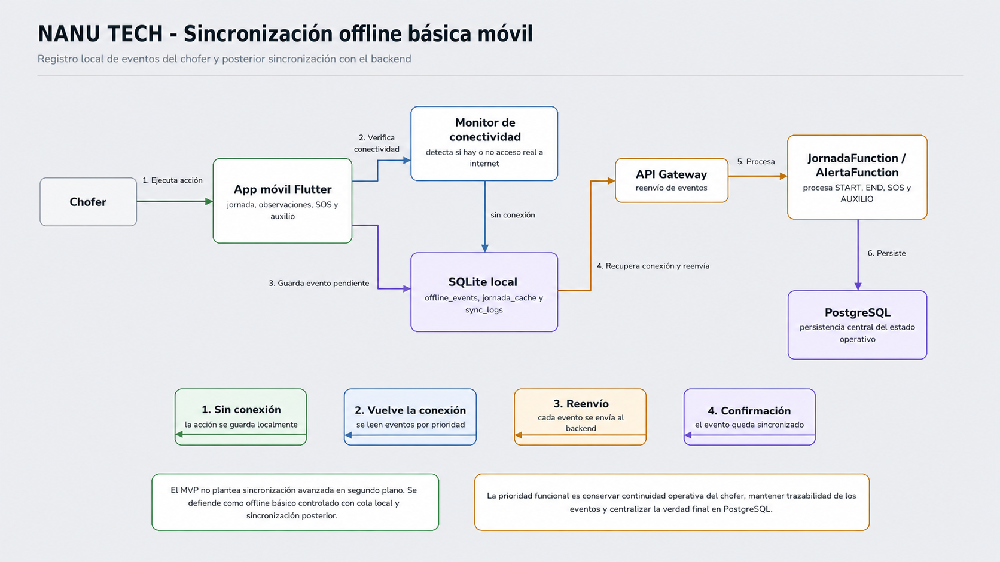
El evento se guarda localmente.
La app detecta conectividad.
La capa de servicios recibe el evento en cola.
El evento queda persistido y marcado como sincronizado.
Esta decisión responde al contexto de rutas con conectividad variable, donde el chofer necesita registrar eventos aun sin conexión estable.
Los datos permiten reconstruir la operación relacionando usuarios, flota, contratos, jornadas, observaciones, alertas, auditoría y eventos móviles.
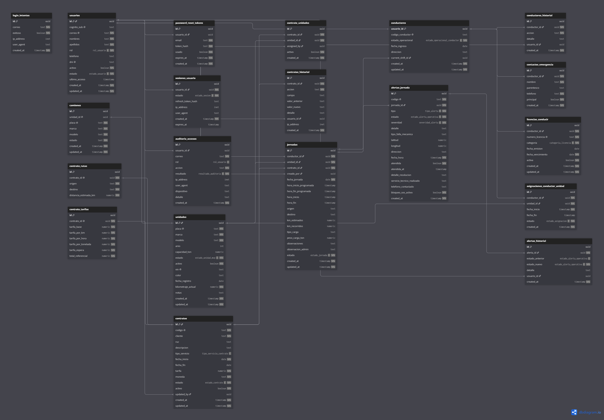
Una jornada relaciona conductor, unidad, contrato, observaciones y alertas; la auditoría permite revisar acciones críticas por usuario y rol.
La web concentra la operación administrativa, la supervisión gerencial y un canal secundario de respaldo para el chofer.
Dashboard, camiones, jornadas, alertas, auditoría y conductores como consulta/perfil.
Dashboard gerencial, contratos, asignación de unidades e historial operativo.
Canal secundario para consulta de jornada, observaciones, SOS/auxilio o contingencia.
Roles, permisos y datos compartidos con la app móvil mediante servicios comunes.
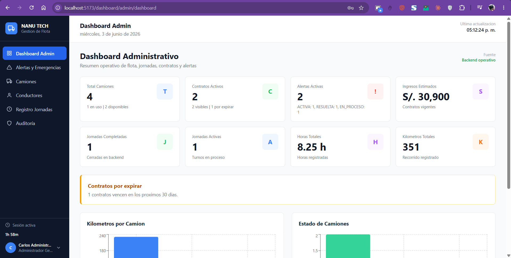
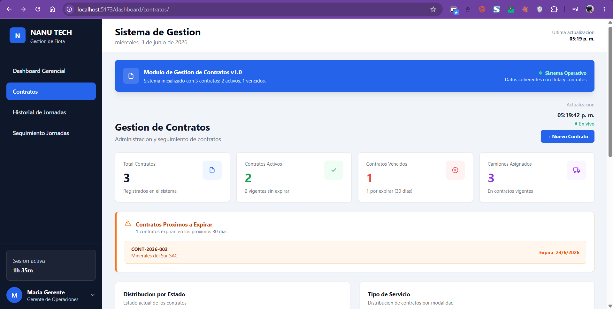
Respaldo operativo; la app móvil es el canal principal del chofer en campo.
El sistema web demuestra la administración y supervisión del MVP; no se presenta como plataforma completa de telemetría.
La app móvil funciona como canal principal del chofer para registrar eventos operativos desde campo.
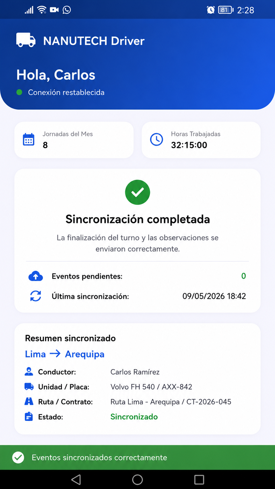
La app móvil permite que el chofer registre eventos críticos incluso con conectividad limitada, bajo un soporte offline básico y controlado.
Los servicios técnicos sostienen autenticación, permisos, persistencia y auditoría para mantener consistencia entre web, app móvil y datos.
Login, sesión y acceso por rol para administrador, gerente y chofer.
Usuarios, camiones, contratos, jornadas, alertas y auditoría.
Rutas protegidas, validación de permisos y accesos no autorizados.
Registros operativos y relación con PostgreSQL.
Acciones críticas asociadas a usuario, rol, módulo, fecha y estado.
CORS, variables de entorno, logs, pruebas de acceso y ambiente.
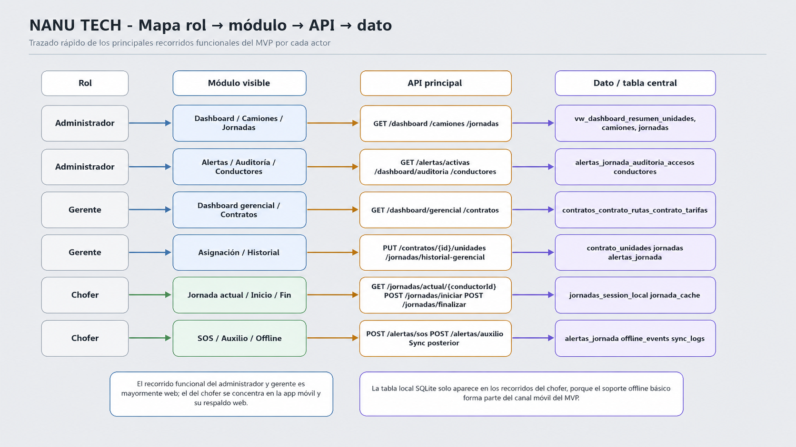
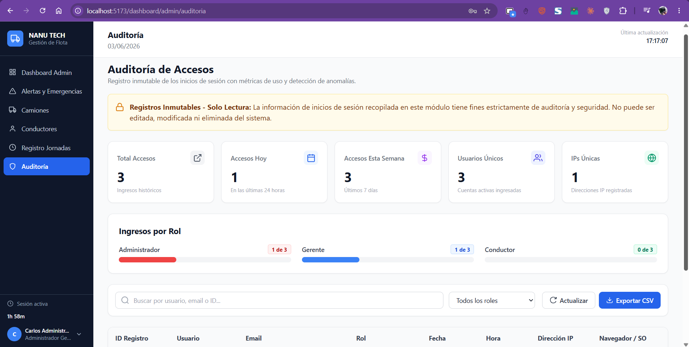
El backend/API no es un actor funcional ni el centro del producto; es la capa técnica que permite que los canales web y móvil compartan reglas, datos y auditoría.
La validación cubre flujos web, app móvil, roles, integración, offline/sync, auditoría y evidencias QA del MVP.
Login, jornadas, contratos, alertas y auditoría.
Web, app móvil, servicios comunes y base de datos.
Administrador, gerente y chofer con accesos diferenciados.
Jornada asignada, inicio, fin, observaciones, SOS/auxilio.
Cola local, eventos en cola y sincronización posterior controlada.
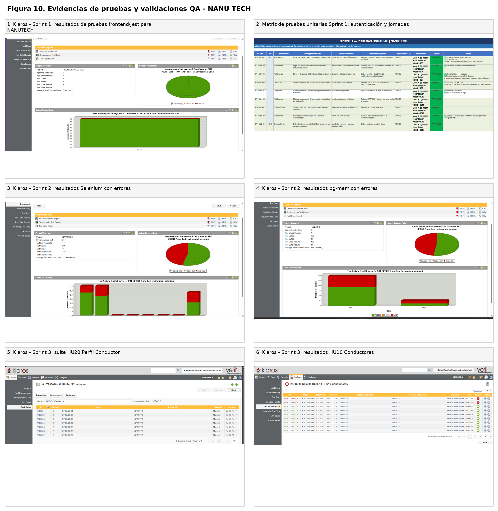
Las pruebas validan el funcionamiento base del MVP; las validaciones productivas avanzadas, cloud estable y offline robusto quedan fuera del alcance actual.
El sistema queda preparado para despliegue local, testing y cloud inicial sobre una arquitectura AWS.
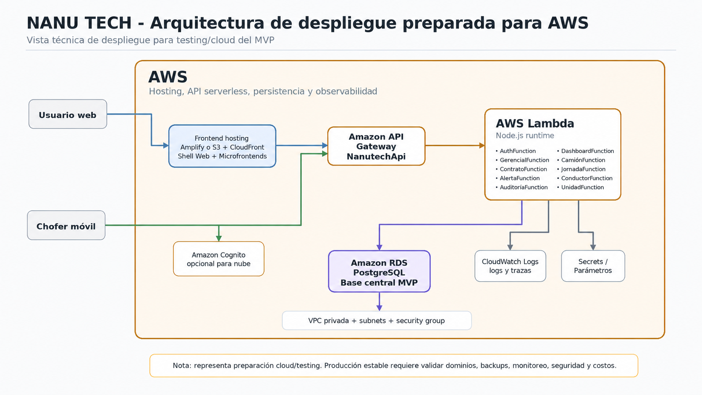
AWS se plantea como nube prevista para el sistema; en el MVP se valida como despliegue inicial/testing, no como producción empresarial estabilizada.
La producción empresarial estabilizada queda como evolución futura, después de pruebas, monitoreo, seguridad y operación sostenida.
La estimación dimensiona el esfuerzo para construir, configurar, validar y estabilizar la primera versión funcional de NANU TECH.
Inversión inicial del MVP, no precio final por empresa cliente.
NANU TECH podría comercializarse como SaaS B2B configurable: setup inicial + suscripción mensual según tamaño de flota.
El desarrollo corresponde a la inversión del producto base. La implementación, capacitación y soporte pueden trasladarse a cada cliente mediante setup y plan mensual.
La operación se plantea como puesta en marcha controlada, capacitación por rol, soporte inicial y mantenimiento planificado.
Ambiente local/testing/cloud inicial, carga de usuarios, camiones, contratos y jornadas, piloto controlado, smoke tests y soporte.
Administrador 8 h, gerente 4 h y chofer 4 h prácticas para módulos, alertas, jornada, auditoría y soporte.
Correctivo, adaptativo, perfectivo y preventivo: errores, configuración, UX/reportes, logs, respaldos, seguridad y rendimiento.
GPS externo, telemetría, BI avanzado, push notifications, cloud productivo y módulos avanzados fuera del MVP.
El MVP no termina en la entrega del código; requiere operación controlada, capacitación por rol y mantenimiento para sostener su uso.
NANU TECH se presenta como una plataforma web-móvil para trazabilidad operativa de flota: la web gestiona, la app móvil opera, los datos trazan y los servicios técnicos sostienen seguridad, persistencia y auditoría.
MVP operativo delimitado, canales web-móvil integrados y trazabilidad con PostgreSQL, auditoría y evidencias QA.
El proyecto evidencia el ciclo DISI completo: análisis, diseño, implementación, pruebas y operación.
GPS real-time, BI, push, combustible, facturación, producción AWS estable y offline robusto quedan fuera del MVP.
Consolidar QA, seguridad, monitoreo, anexos y estabilidad antes de ampliar el alcance.
NANU TECH no se presenta como plataforma logística empresarial completa ni como proyecto centrado solo en backend/API, sino como MVP web-móvil técnicamente delimitado y alineado al ciclo de vida de Diseño e Implementación de Sistemas.